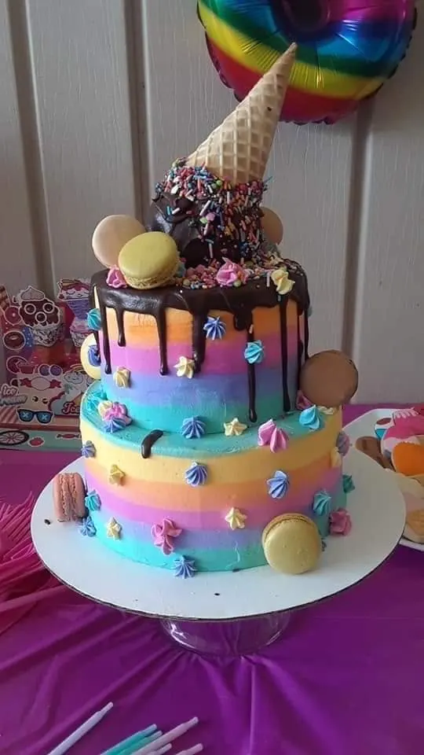
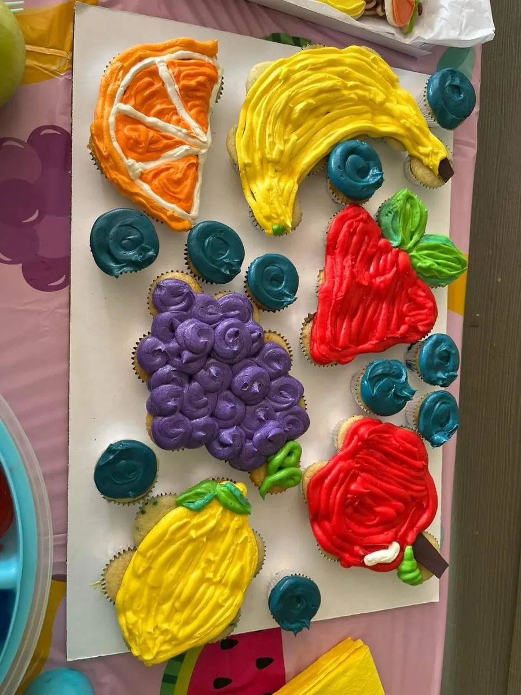
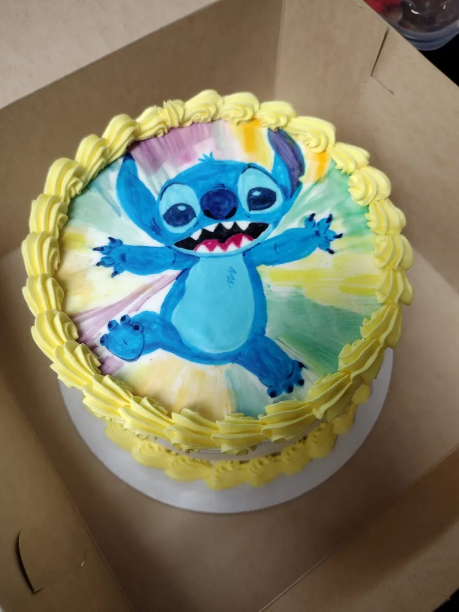
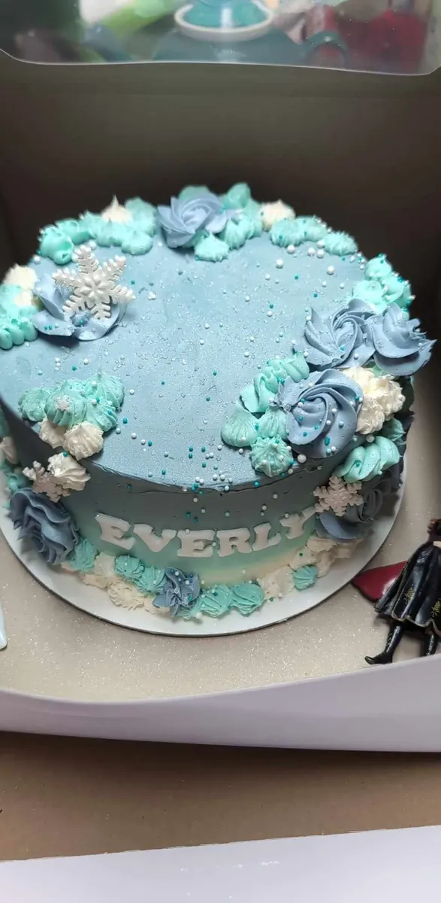
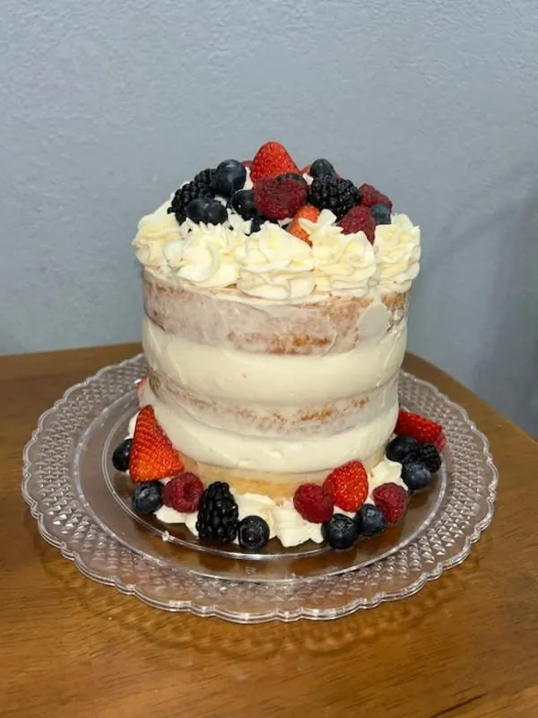
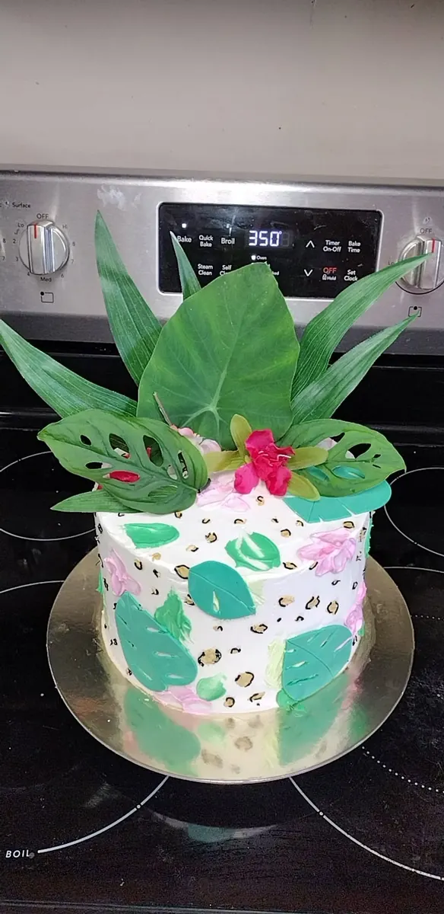
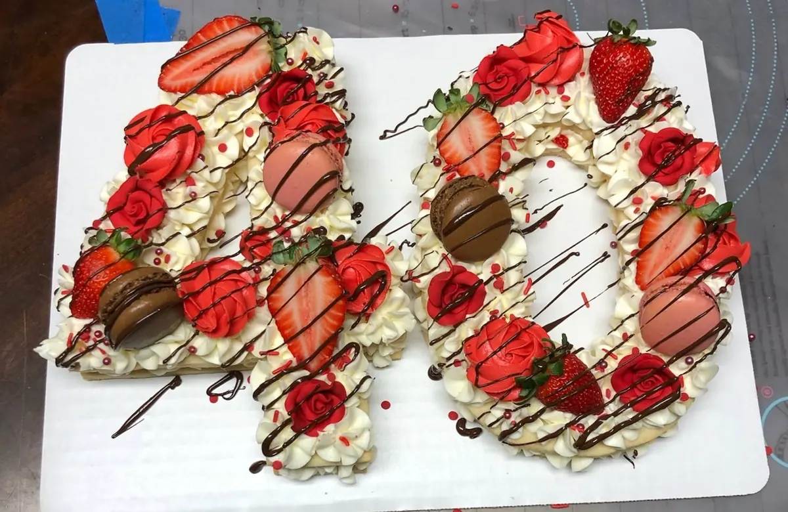
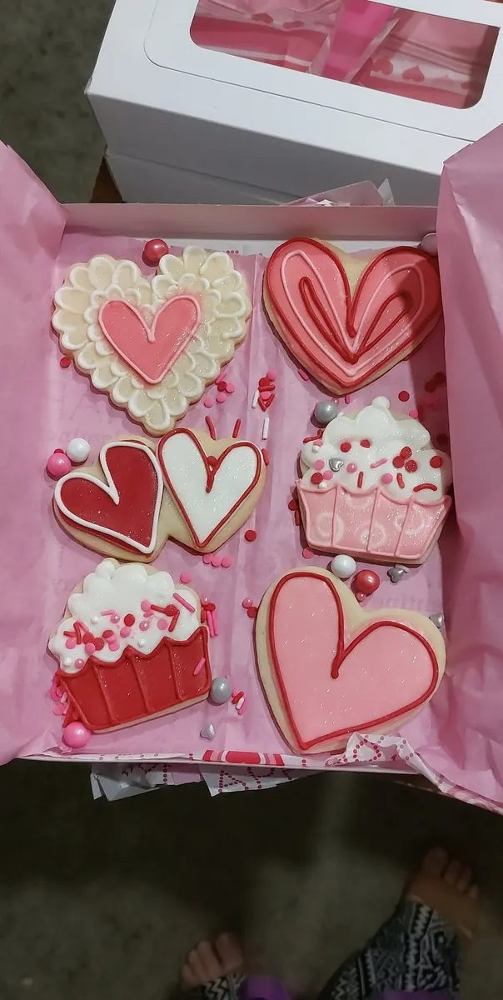
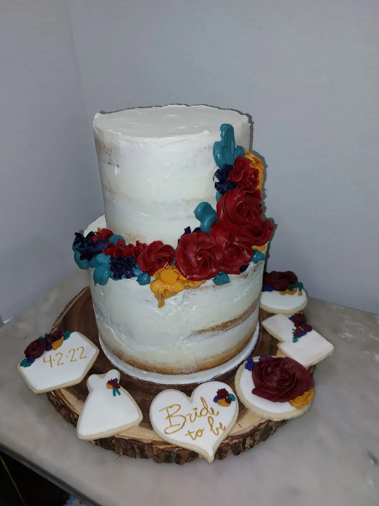

Custom cakes
Celebration cakes
Birthday cakes, milestone cakes, themed creations, and specialty designs made around the occasion.
Every order can be different. Browse real Lamb's Cakes work for inspiration, then ask about current options, availability, and pricing.

Birthday cakes, milestone cakes, themed creations, and specialty designs made around the occasion.

Shareable sweets for parties, events, gifts, and dessert tables.

Bring a favorite theme, character, color palette, or inspiration image and start the conversation there.

Personalized cakes that can match the mood, colors, and occasion.

Homemade dessert-style creations for gatherings, gifts, and sweet cravings.

Cake pops, chocolate-covered pretzels, cookies, and other custom sweets may also be available. Ask about the idea you have in mind.
A strong bakery website should let the food do the convincing. These are real creations from Lamb's Cakes.



Photos used with permission.
A little information up front makes it easier for Lamb's Cakes to check availability and understand what you need.
The order planner helps you organize the details before opening Facebook to message Lamb's Cakes.